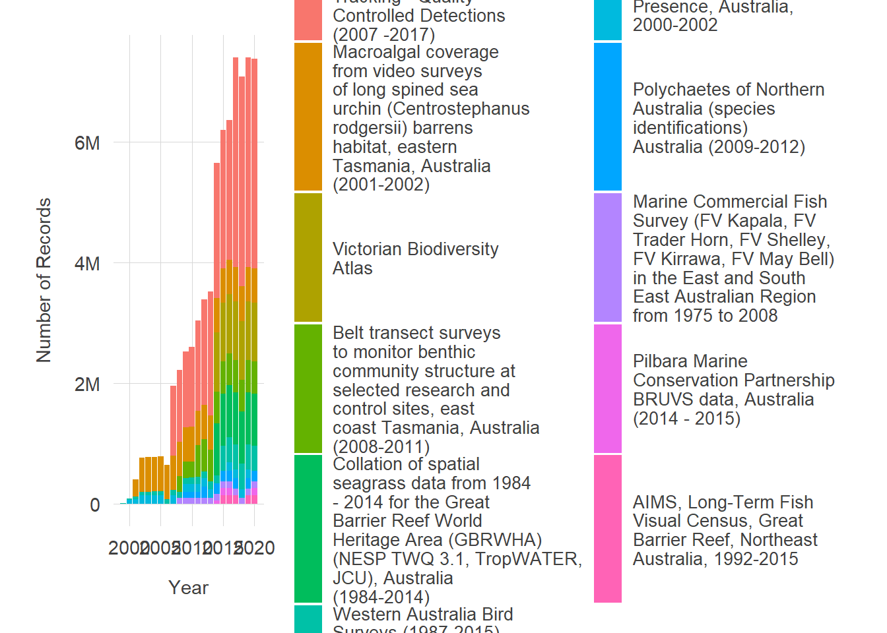

Analysis proposal
Dax Kellie
2021-08-23
Here are some possible ways to see the growth of citizen science data in the Atlas of Living Australia
Data providers
One way to look the growth of citizen science might be to first view the full number of records each data provider has added to the ALA.
# packages
library(galah)
library(tidyverse)
library(purrr)
library(viridis)
library(kableExtra)
galah_config(email = "dax.kellie@csiro.au")As far as I can tell, dataResourceName contains the best data provider categories. Here are some examples:
# search_fields("data")
# find_field_values("dataResourceName")
provider_counts <- ala_counts(group_by = "dataResourceName", limit = 900)
provider_counts %>% slice(1:10) %>% kbl() %>% kable_styling(full_width = FALSE)| dataResourceName | count |
|---|---|
| eBird Australia | 26644454 |
| NSW BioNet Atlas | 12309031 |
| BirdLife Australia, Birdata | 11635460 |
| Victorian Biodiversity Atlas | 8285400 |
| New South Wales Bird Atlassers | 3381819 |
| First Bird Atlas | 2712345 |
| iNaturalist Australia | 2092749 |
| SA Flora (BDBSA) | 1913981 |
| Garden Bird Surveys | 1655345 |
| SA Fauna (BDBSA) | 1632141 |
As a test, we can look at the number of records each data provider added to the ALA. Here I’ve only downloaded data for a a small subset of years - between 1999 and 2003 - to avoid making Hypotheses After the Results are Known when writing the paper (i.e. HARKing).
# Find number of records by data provider by year
# list years
years <- 1999:2003
years_long <- paste0("select_filters(year = ", years, ")", sep="")
# Get counts of records from data providers by year
data_providers <- years_long %>%
map(~ala_counts(
list(filters = .x),
group_by = "dataResourceName",
limit = 900)) %>%
tibble(year = years,
y = .) %>%
unnest(y) # back to df
# clean string names of data providers
data_providers <- data_providers %>%
mutate(dataResourceName = str_squish(dataResourceName))
# plot
data_providers %>%
drop_na() %>%
group_by(dataResourceName) %>%
# arrange(year, dataResourceName) %>%
dplyr::summarise(count = count,
total = sum(count),
cum_total = cumsum(count),
year = year) %>%
filter(total > 30000) %>%
ggplot(aes(x = year,
y = cum_total,
fill = reorder(str_wrap(dataResourceName), -cum_total))) +
geom_bar(stat = "identity") +
scale_y_continuous(labels = scales::label_number_si()) +
labs(x = "Year", y = "Number of Records") +
scale_fill_brewer(palette = "Set2", direction = 1) +
guides(fill = guide_legend(title = "Data Providers", nrow = 6)) +
theme_minimal()
Type of record
Another way we might be able to see the growth of citizen records is to look at the cumulative number of different types of records added to the ALA over time. Again, we will just look at a small subset between 1999 and 2003. This is a replication of plots Matilda made in her Shiny app
# by record type
record_type <- years_long %>%
map(~ala_counts(
list(filters = .x),
group_by = "basisOfRecord",
limit = 900)) %>%
tibble(year = years,
y = .) %>%
unnest(y) # back to df
record_type <- record_type %>%
mutate(basisOfRecord = stringr::str_to_title(basisOfRecord))
record_type %>%
drop_na() %>%
group_by(basisOfRecord) %>%
dplyr::summarise(count = count,
total = sum(count),
cum_total = cumsum(count),
year = year) %>%
ggplot(aes(x = year,
y = cum_total,
fill = reorder(basisOfRecord, -cum_total))) +
geom_bar(stat = "identity") +
scale_y_continuous(labels = scales::label_number_si()) +
labs(x = "Year", y = "Number of Records") +
scale_fill_brewer(palette = "Dark2", direction = 1) +
guides(fill = guide_legend(title = "Basis of Record")) +
theme_minimal()
Kingdoms
It might also be useful to divide counts by kingdoms, knowing the huge biases in human observation records. It is possible to separate this by phylum or class, or even of a specific animal (like Cam’s favourite - Koalas) though we just need to be deliberate about our choices.
I plan to try comparing the top 25-50 most popularly added taxa to the rest of the Atlas to see the extent of bias in records.
# Ok now by kingdom
# Extract kingdom names
kingdoms <- ala_counts(group_by = "kingdom", limit = 10)
kingdom_names <- pull(kingdoms, kingdom)
# What martin did to get them all (but his wasn't by year)
kingdom_counts <- kingdom_names %>%
map( ~ ala_counts(
taxa = select_taxa(list(kingdom = .x)),
group_by = "dataResourceName",
limit = 10
)) %>%
tibble(
kingdom = kingdom_names,
y = .) %>%
unnest(y)
# I think I just have to put this into a function and run it many times
# We have to do it this way because each select_filters() call builds a df
year_filter_1999 <- select_filters(year = 1999)
year_filter_2000 <- select_filters(year = 2000)
year_filter_2001 <- select_filters(year = 2001)
year_filter_2002 <- select_filters(year = 2002)
year_filter_2003 <- select_filters(year = 2003)
# Create a function that gets counts for all kingdoms and converts to data frame
get_year_counts <- function(year_filter, year_number) {
kingdom_counts <- kingdom_names %>%
map( ~ ala_counts(
taxa = select_taxa(list(kingdom = .x)),
filters = year_filter,
group_by = "dataResourceName",
limit = 900
)) %>%
tibble(
kingdom = kingdom_names,
year = rep(year_number),
y = .) %>%
unnest(y) %>% select(-name)
}
# Run this function for each year
counts_1999 <- get_year_counts(year_filter_1999, 1999)
counts_2000 <- get_year_counts(year_filter_2000, 2000)
counts_2001 <- get_year_counts(year_filter_2001, 2001)
counts_2002 <- get_year_counts(year_filter_2002, 2002)
counts_2003 <- get_year_counts(year_filter_2003, 2003)
# merge all the years
counts_99_to_03 <- rbind(counts_1999, counts_2000, counts_2001, counts_2002, counts_2003)
# Get complete list of possible kingdoms and dataResources
# We have kingdom names
# kingdom_names
# Extract resources names
resources <- find_field_values("dataResourceName", limit = 900)
resource_names <- pull(resources, category)
resource_names <- resource_names %>% str_trim() # trim whitespace
# Use crossing() to find all possible combinations of inputs
years_list <- 1999:2003
king_df <- crossing(kingdom_names, years_list, resource_names)
king_df <- king_df %>% # Do some renaming before merging
rename(kingdom = kingdom_names,
year = years_list,
dataResourceName = resource_names)
# Get missing values
full_counts <- king_df %>%
left_join(counts_99_to_03) %>%
replace_na(list(count = 0)) # replace NAs
# full_counts %>% slice(1:10)
full_counts <- full_counts %>%
group_by(kingdom, dataResourceName) %>%
mutate(
cum_count = cumsum(count)
)
# full_counts %>% filter(kingdom == "Fungi") %>% filter(dataResourceName == "Fungimap")#------------ Plot ---------------#
library(ggstream)
library(viridis)
full_counts_tidy <- full_counts %>%
mutate(across(where(is.character), as.factor))
# glimpse(full_counts_tidy)
# Plotting stacked area chart function
stream_plot_function <- function(kingdom_name, at_least_this_many_records){
full_counts_tidy %>%
drop_na() %>%
filter(kingdom == as.character(kingdom_name)) %>%
group_by(kingdom, dataResourceName) %>%
dplyr::summarise(total = cumsum(count),
year = year) %>%
filter(total > at_least_this_many_records) %>% # filter records
ggplot(aes(x = year, # Plot
y = total,
fill = str_wrap(dataResourceName))) +
geom_stream(color = "black",
extra_span = .013,
type = "ridge", bw = 1) +
# geom_stream_label(aes(label = dataResourceName),
# size = 4, type = "ridge",
# colour = "black") +
scale_fill_viridis_d(option = "D") +
guides(fill = guide_legend(title = "Data provider")) +
scale_x_continuous(name = "Year") +
scale_y_continuous(name = "Total observations per year",
labels = scales::comma) +
theme_minimal()
}Use the buttons to look at each plot, and take note of the y axis because the number of records added changes quite a bit between kingdoms
Plots
Animalia
stream_plot_function("Animalia", 200000)
Plantae
stream_plot_function("Plantae", 125000)
Fungi
stream_plot_function("Fungi", 5000)
Bacteria
stream_plot_function("Bacteria", 50)
Chromista
stream_plot_function("Chromista", 10000)Protista
stream_plot_function("Protista", 1)
Protozoa
stream_plot_function("Protozoa", 1)
Future ideas
There are still other visualisations I am looking to try. These include:
- Some sort of comparison of yearly rates of change in different types of record counts
- Growth rate of popular vs unpopular species records in the ALA
- Records in bushfire areas before vs after bushfires (this requires some sort of geographic coordinates of bushfires, so could be complicated)